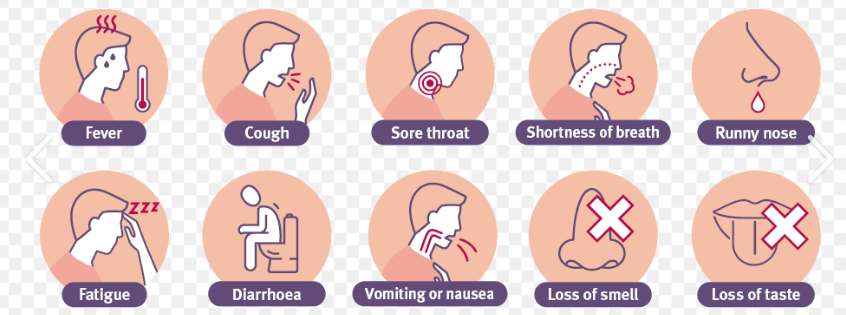
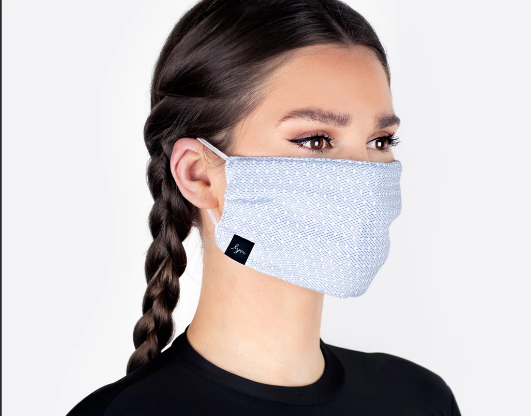
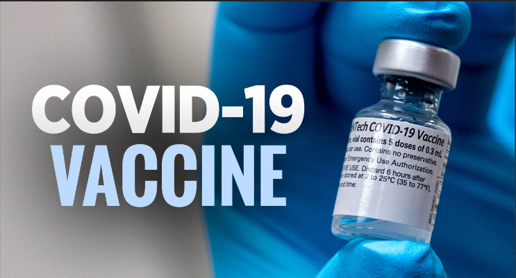
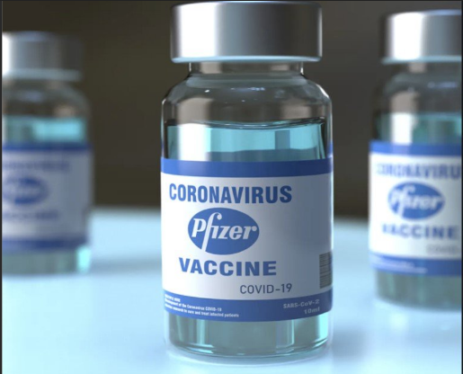

Information about corona virus ( symptoms/treatment/vaccines )
(1) Coronavirus Symptoms (COVID-19):

People with COVID-19 have had a wide range of symptoms reported – ranging from mild symptoms to severe illness. These symptoms may appear 2-14 days after exposure to the virus:
1) Fever
2) Cough
3) Shortness of breath or difficulty breathing
4) Chills
5) Repeated shaking with chills
6) Muscle pain
7) Headache
8) Sore throat
9) New loss of taste or smell
(2) Corona Virus treatment:

At-Home Coronavirus Treatment If your symptoms are mild enough that you can recover at home, you should: Rest. It can make you feel better and may speed your recovery. Stay home. Don't go to work, school, or public places. Drink fluids. You lose more water when you're sick. Dehydration can make symptoms worse and cause other health problems. Monitor. If your symptoms get worse, call your doctor right away. Don't go to their office without calling first. They might tell you to stay home, or they may need to take extra steps to protect staff and other patients. Ask your doctor about over-the-counter medicines that may help, like acetaminophen to lower your fever. The most important thing to do is to avoid infecting other people, especially those who are over 65 or who have other health problems. That means: Try to stay in one place in your home. Use a separate bedroom and bathroom if you can. Tell others you're sick so they keep their distance. Cover your coughs and sneezes with a tissue or your elbow. Wear a mask over your nose and mouth if you can. Wash regularly, especially your hands. Don't share dishes, cups, eating utensils, towels, or bedding with anyone else. Clean and disinfect common surfaces like doorknobs, counters, and tabletops.
(3) corona virus vaccines:

A COVID‑19 vaccine is a vaccine intended to provide acquired immunity against severe acute respiratory syndrome coronavirus 2 (SARS‑CoV‑2) , the virus causing coronavirus disease 2019 (COVID‑19). Prior to the COVID‑19 pandemic, there was an established body of knowledge about the structure and function of coronaviruses causing diseases like severe acute respiratory syndrome (SARS) and Middle East respiratory syndrome (MERS), which enabled accelerated development of various vaccine technologies during early 2020.[1] On 10 January 2020, the SARS-CoV-2 genetic sequence data was shared through GISAID, and by 19 March, the global pharmaceutical industry announced a major commitment to address COVID-19.[2] In Phase III trials, several COVID‑19 vaccines have demonstrated efficacy as high as 95% in preventing symptomatic COVID‑19 infections. As of April 2021 16 vaccines are authorized by at least one national regulatory authority for public use: three RNA vaccines (Pfizer–BioNTech and Moderna), seven conventional inactivated vaccines (BBIBP-CorV, CoronaVac, Covaxin, WIBP-CorV, CoviVac, Minhai-Kangtai and QazVac), five viral vector vaccines (Sputnik Light, Sputnik V, Oxford–AstraZeneca, Convidecia, and Johnson & Johnson), and two protein subunit vaccines (EpiVacCorona and RBD-Dimer).[3][failed verification] In total, as of March 2021, 308 vaccine candidates are in various stages of development, with 73 in clinical research, including 24 in Phase I trials, 33 in Phase I–II trials, and 16 in Phase III development.

Many countries have implemented phased distribution plans that prioritize those at highest risk of complications, such as the elderly, and those at high risk of exposure and transmission, such as healthcare workers. Single dose interim use is under consideration in order to extend vaccination to as many people as possible until vaccine availability improves. As of 6 June 2021, 2.15 billion doses of COVID‑19 vaccine have been administered worldwide based on official reports from national health agencies. AstraZeneca anticipates producing 3 billion doses in 2021, Pfizer–BioNTech 1.3 billion doses, and Sputnik V, Sinopharm, Sinovac, and Johnson. Moderna targets producing 600 million doses and Convidecia 500 million doses in 2021. By December 2020, more than 10 billion vaccine doses had been preordered by countries, with about half of the doses purchased by high-income countries comprising 14% of the world's population